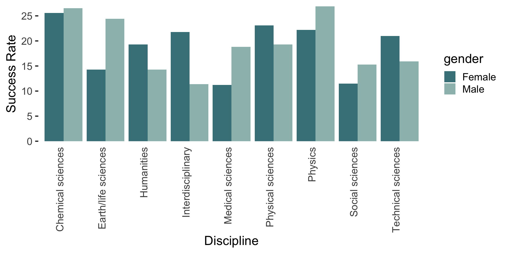

At some point in your life you have probably found yourself standing face-to-face with a beast known as a grouped bar chart. Perhaps it was in a research paper where the authors were trying to compare the results of several models across different datasets, or it was in a talk given by a colleague who was trying to compare the popularity of different products among distinct groups of consumers.
The first time you encountered a grouped bar chart you might have thought “what a neat way to put so much information in a single plot!”. However, the moment you started trying to see whether the orange bar always does better than the green bar but worse than the blue bar.
In the example below (made with ggplot2), I show a simple grouped bar chart comparing research funding success rates across a variety of disciplines with the data split into two categories for each discipline: males and females. This data came from Rafael Irizarry’s excellent R package, dslabs, containing datasets for teaching data science.

Even in this simple example, I find it really difficult to compare male and female funding success rates across genders. Are the males having more success than the females overall? It’s genuinely hard to tell unless I examine each discipline closely and see that men are doing better in the first two groups, but not the two after that, and then I think they are doing a bit better in the categories after that, but now I’m having a hard time and I really want to stop looking at this plot now…
Fortunately, people such as Ann K. Emery (in her post on grouped bar charts) have thought about how to represent this information in a better way. Below I will show 2 alternative approaches (slope charts and horizontal dot plots).
While these are not necessarily “standard” plot types (as in there is no specific geom_ for them), true freedom in visualization comes with the realization that most plots are just arrangements of circles and lines in space. When you truly embrace this idea, you can make any type of figure you want! By means of demonstration, in my next post I show the ggplot2 R code for making each plot.
Slope plots
The first alternative is similar to parallel coordinates plots for multi-variate data visualization. The slope plot contains two axes (or three or four, depending on how many groups you have), one for each group (male and female). The disciplines are each represented by a line connecting the male success rates to the female success rates in as coded by their y-position. This plot makes it very clear for which disciplines women have greater funding success than men (the upward sloping, darker colored lines) and it also makes it very clear which disciplines have higher funding success rates overall (Physics and Chemical sciences).

What we see much more clearly is that the number of disciplines in which men are more successful is similar to the number of disciplines in which women are more successful. The discipline with the most similar success rates between men and women is the Chemical sciences. All of this information was very difficult to obtain from the grouped bar chart!
Horizontal dot plots
Another alternative is the horizontal dot plot: In this case each discipline is again represented by a line, but instead of coding the success rates as the y-position at the end of the discipline slope, the success rate is coded as the x-position along the discipline-specific horizontal line. I have ordered the disciplines by the women’s funding success rate.

For me, the horizontal dot plot highlights that in the disciplines with lower funding rates overall (the bottom few rows), men have higher success rates.
Regardless of your preference, it is fairly clear that both the slope plot and the horizontal dot plots are easier to digest than the grouped bar plot!
Code
My next post shows the ggplot2 code that I wrote to produce the three plots in this post.
References
The research funding data comes from Rafael Irizarry’s
dslabsR packageThe slope and dot plot ideas for this post come from Ann K. Emery’s post on the same topic.